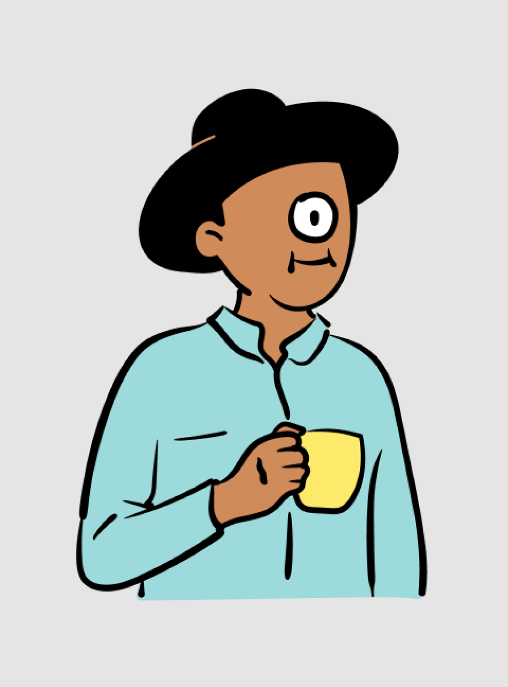

Robert Wijaya

Master's Student
The Australian National University
News / Activities
- 11/2021 Just informed by Australia Awards that I will commence the study in Semester 1, 2022!
- 03/2021 I will give a webinar to my almamater, Universitas Mikroskil to share about Australia Awards Scholarship and how I manage to receive the scholarship (Watch).
- 05/2020 Due to COVID-19 pandemic, my Master's studies will be deferred.
- 02/2020 Just finished EAP course and will start my Master's degree at Australian National University in June 2020.
- 10/2019 I will start my English for Academic Purposes (EAP) course at IALF Jakarta for the next 4.5 months.
- 08/2019 I received an Australia Awards Scholarship!
- 06/2019 I will go to Universitas Syiah Kuala this July to interview for Australia Awards Scholarship!
Short Bio
I am a Master's student in Machine Learning and Computer Vision (MMLCV) at the Australian National University (ANU). Prior to that, I obtained my Bachelor degree in Computer Science and Information System from Universitas Mikroskil, Indonesia.
Research Interest: Machine Learning, Computer Vision.
Misc
- I have completed 23 MOOC courses, e.g. deep learning, data science, data analysis, machine learning (See the full list here).
- In August 2019 I received Australia Awards Scholarship to pursue a Master's studies in Australia.
- In my spare time, I enjoy swimming, reading books, or watching some random stuff on Youtube.